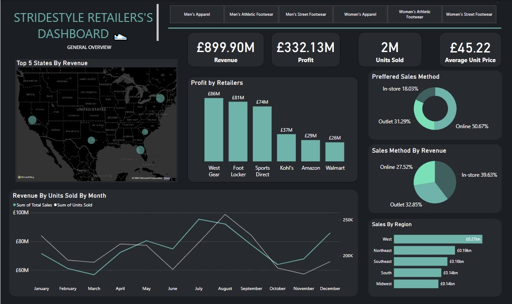
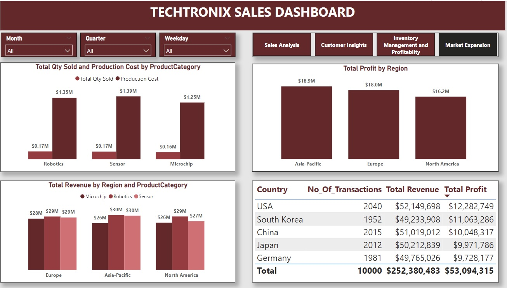
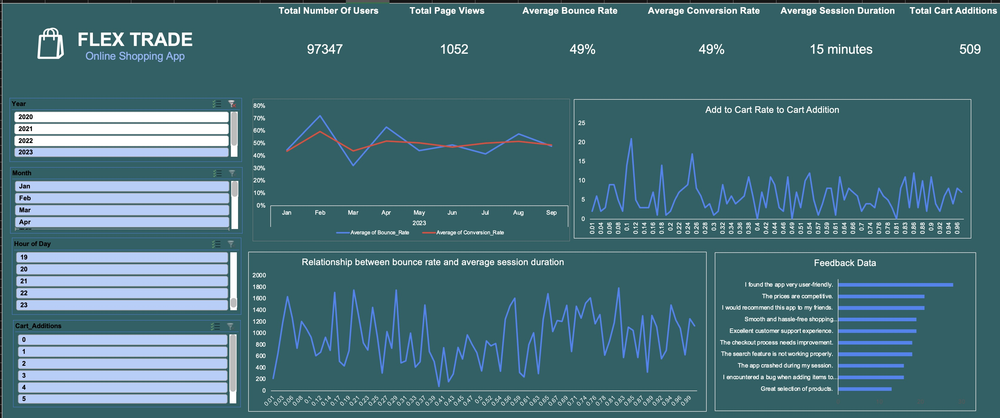

In this project, the insights were gained from comprehensive analysis that enableb Stridestyle to optimize resource allocation, enhance profitability, and make data-driven decisions to strengthen their market position. Recommendations include focusing on top-performing retailers, optimizing sales channels, and targeting key regions with strategic marketing efforts.

The Power BI report developed for Techtronix Innovations provides a powerful tool for data-driven decision-making. By analyzing sales performance, customer insights, inventory management, profitability, and market expansion opportunities, the report equips Techtronix with the insights needed to overcome current challenges and drive future growth. The recommendations provided in the report will help optimize operations, enhance profitability, and guide strategic expansion efforts.

In this project, we address the identified UX problems, optimizing the checkout process, suggesting personalized products, and encouraging higher spending, FlexTrade can improve user experience and stay competitive in the online shopping market. These strategies will help increase user engagement, reduce cart abandonment, and boost revenue